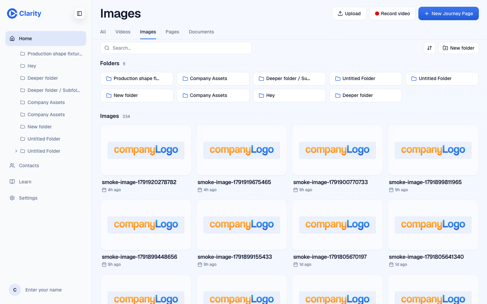
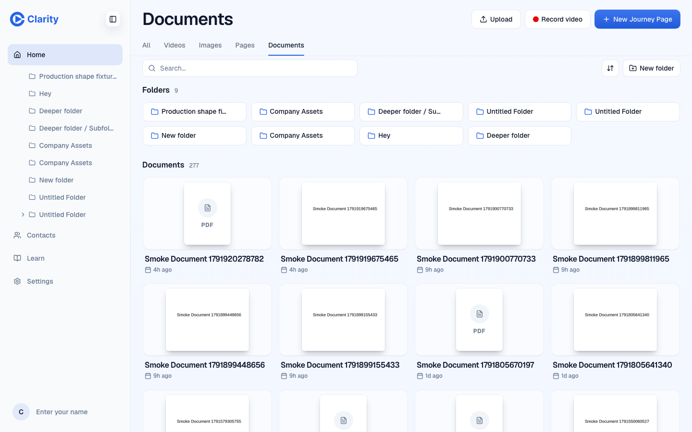
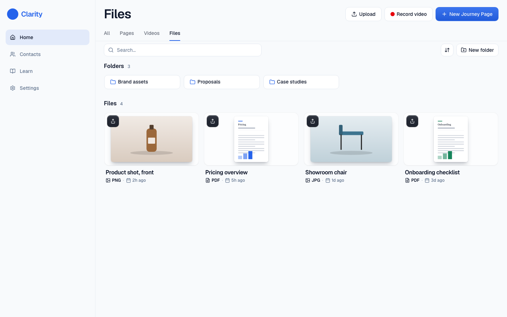
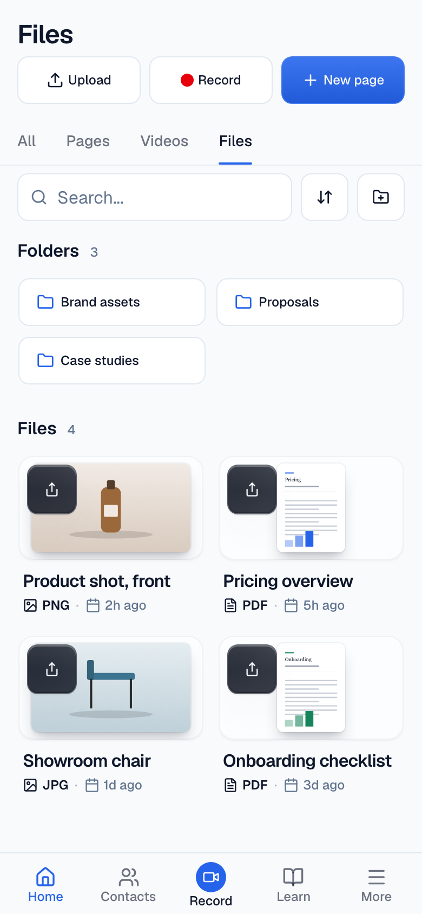
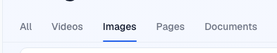
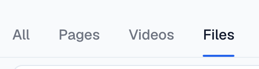

Library: Images and Documents become one "Files" tab
Home library type tabs, desktop and phone.
Four tabs: All, Videos, Pages, Files. Files holds images and PDFs with the type on the card. Nothing else changes; the picker inside the editor already lists both.
The problem
Five tabs for four content types, and two of them (Images, Documents) are page ingredients, not things a rep sends. Documents are rare: 101 customer workspaces have one, against 614 with an image and 1,313 with anything.
What it would look like












What the data says
Customer workspace nodes
| Type | All time | Created last 90 days | Used in a live page |
|---|---|---|---|
| video | 6,021 | 238 | |
| journey_page | 5,296 | 162 | |
| image | 5,277 | 415 | 2,754 (52%) |
| document | 241 | 19 | 132 (55%) |
| folder | 914 | 25 |
Workspaces with any image: 614. With any document: 101. "Used" matches the node's asset id inside any live page document (gallery, logos, hero and story media, document block url). Migrated nodes carry their import date, so the 90-day column is close but not exact.
Options
One tab fewer, no data change, the type stays visible on the card.
Half of uploaded images never land on a page, so reps do browse and manage them. Removing the view hides 5,277 items.
Nothing wrong with it except one more tab than the content needs.
Questions for William
Recommended: Yes.
Recommended: Yes. Videos first matches U11 making Record the first action.
PRs once decided
HomeTreeRoute.tsx TYPE_OPTIONS and the filter (value "image" or "document"), empty state copy, phone tab row, the ?library= query values with redirects for the old two. Evidence: desktop and phone tabs, Files grid, old URLs redirect.